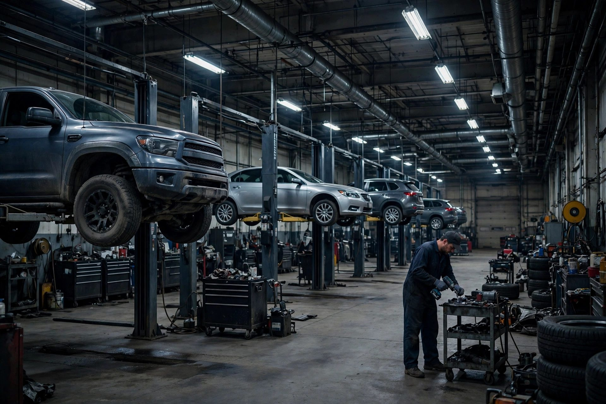
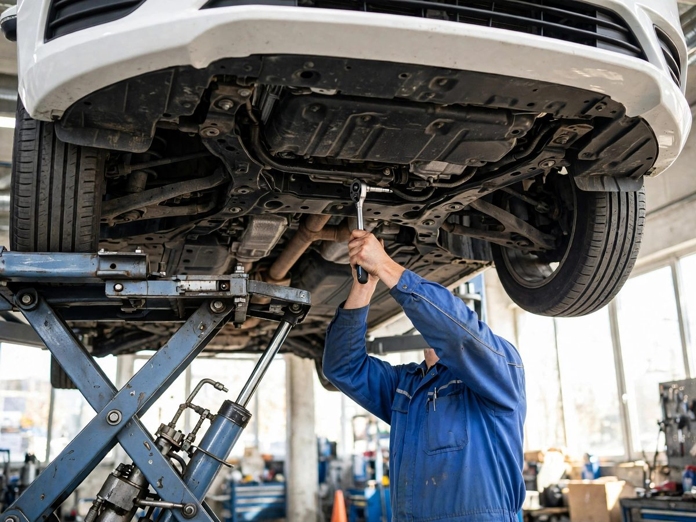
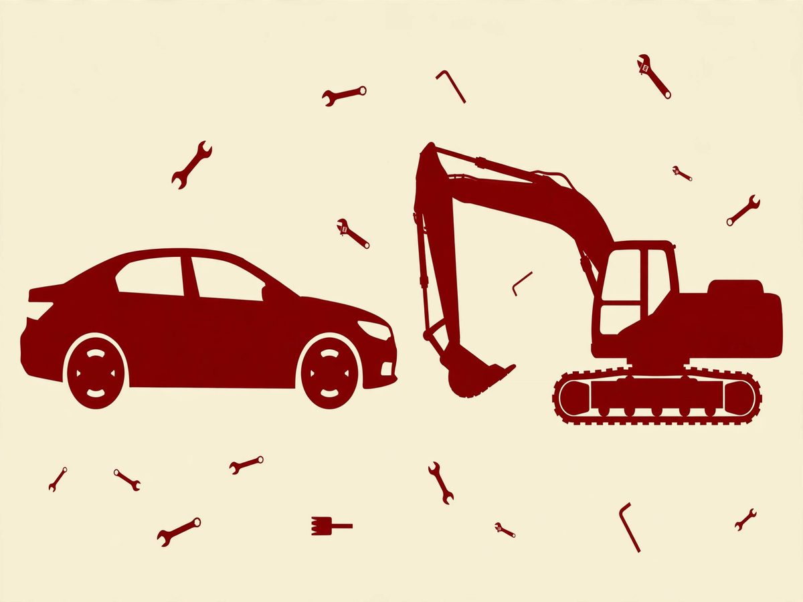
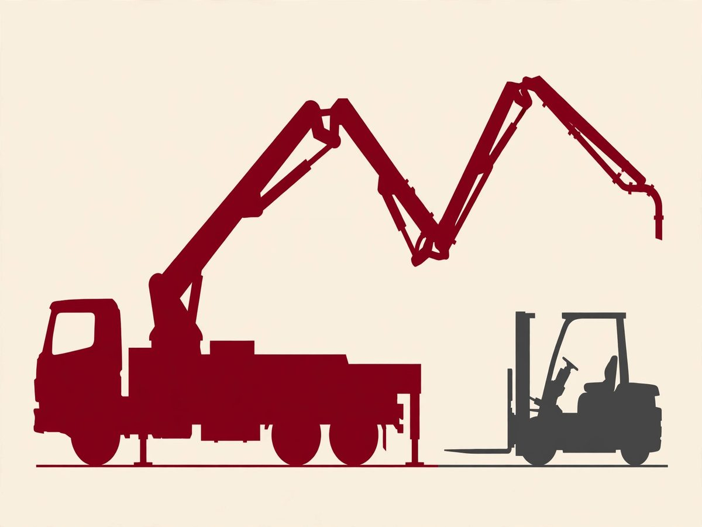

Hokkai Jiko — Vehicle Maintenance
苫小牧市新開町の自動車整備工場。各種自動車から建設機械・コンクリートポンプ車・産業車両まで、複数メーカーの指定工場として幅広い車両の整備に対応しています。
About
北海自工は、苫小牧市新開町に拠点を置く自動車整備工場です。乗用車の車検・点検・修理はもちろん、建設機械やコンクリートポンプ車、産業車両といった特殊車両の整備にも対応しています。
複数メーカーの指定工場としての設備と技術を備え、一般のお客様から法人のお客様まで、幅広い車両の整備をお任せいただけます。

Service

Automobile
車検・法定点検・一般修理など、各メーカーの乗用車に対応します。

Construction
油圧ショベル・ブルドーザーなど、建設現場で稼働する機械の整備・点検に対応します。
Pump Truck
コンクリート圧送に使われるポンプ車の整備・点検に対応します。
Industrial
フォークリフトなど産業現場で使われる車両の整備・点検に対応します。
Corporate
建設業・運送業をはじめ、複数台の車両を管理される法人のお客様の整備もお引き受けしています。
乗用車から特殊車両まで一つの工場でまとめてご相談いただけるため、車種ごとに依頼先を分ける手間がかかりません。車両管理や定期整備のご相談はメールにてお気軽にお問い合わせください。
メールで問い合わせるInformation